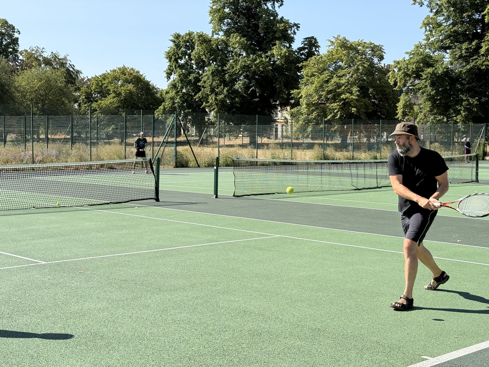
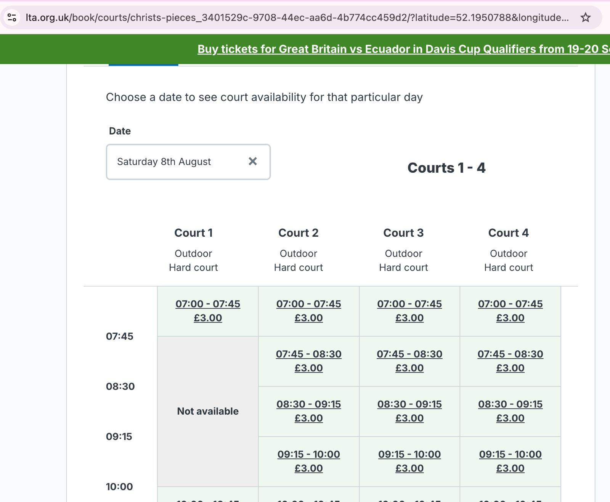
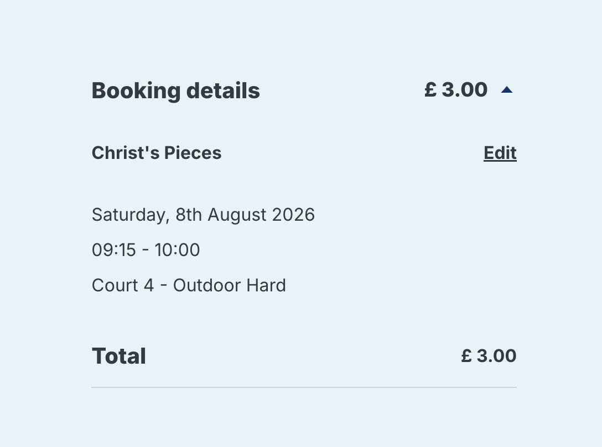

4️⃣ Four makes a match
Doubles is the sweet spot. If you can come, say so the night before so nobody walks to an empty court.

Cambridge · learners welcome
A small group of adult learners. Home court: Christ's Pieces. Book in the Play Tennis app — £3 a slot. Saturdays are on Erdem.
🌍 This site is public. Gate PINs, phone numbers, and home addresses stay in the private chat. 🔒
Doubles is the sweet spot. If you can come, say so the night before so nobody walks to an empty court.
Four outdoor hard courts in the city centre. Book and pay in Play Tennis. Jesus Green and St Ives are the backups when shade or availability wins.
Council rate is £3 per 45-minute slot at Christ's Pieces and Jesus Green. Erdem pays the Saturday bookings. Bring a racket; share balls.
Weekday floaters (often 15:00–17:00) keep the rally going. Whoever books a weekday slot covers that £3 (or split in chat).

